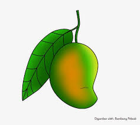

Buah Mangga
Definisi
Mangga adalah salah satu jenis buah-buahan tropis karena hanya tumbuh di iklim cukup hangat. Buah ini berasal dari Asia Selatan dan telah menyebar hingga Indonesia. Selain rasanya lezat, mangga kaya manfaat bagi kesehatan tubuh. Bahkan buah yang satu ini juga dipercaya mampu mencegah berbagai penyakit berbahaya.
Mangga mengandung rendah kalori dan serat tinggi. Mangga merupakan sumber vitamin A, C dan E, serta memiliki kandungan folat, B6, zat besi, hingga kalsium. Buah yang satu ini juga merupakan sumber antioksidan baik, mengandung phytochemical yang baik bagi kesehatan tubuh manusia.
Mangga aman dikonsumsi bagi semua orang, baik anak-anak maupun dewasa. Bahkan banyak pula olahan makanan maupun produk kecantikan yang mencantumkan mangga sebagai salah satu bahan dasarnya. Selain aromanya khas, mangga dapat memberikan manfaat baik bagi kulit.
Kandungan vitamin C dalam mangga tak kalah dari jeruk, anggur, lemon, atau tomat. Lantas apa saja manfaat mangga?
Manfaat buah mangga
- Menurunkan Berat Badan. Jus mangga bisa membantu mencapai tubuh ideal kamu.
- Menyehatkan Otak.
- Meningkatkan Daya Tahan Tubuh.
- Melancarkan Pencernaan.
- Menurunkan Kolesterol.
- Menjaga Kesehatan Mata.
Jenis jenis buah mangga
- Mangga Alpukat.
- Mangga Arumanis.
- Mangga Chokanan.
- Mangga Emperor.
- Mangga Irwin.
Daftar Harga
| Jenis Mangga | Harga | |
|---|---|---|
| Per Kilo | Per Biji | |
| Mangga Alpukat. | 40.000 | 8.000 |
| Mangga Arumanis. | 50.000 | 3.000 |
| Mangga Chokanan | 40.000 | 5.000 |
| Mangga Emperor | 30.000 | 5.000 |
| Mangga Irwin | 69.000 | 7.000 |